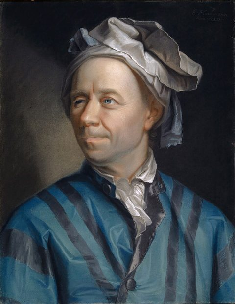

Leonhard Euler und die Geschichte der Zahl e
Leonhard Euler (1707 bis 1783)

- Geboren
- 15. April 1707 in Basel (Schweiz)
- Gestorben
- 18. September 1783 in Sankt Petersburg (Russland)
- Ausbildung
- Studium in Basel, Unterricht in Mathematik bei Johann Bernoulli
- Werk
- mehr als 800 Schriften zu Analysis, Zahlentheorie, Geometrie, Mechanik, Astronomie und Musiktheorie; einer der produktivsten Mathematiker aller Zeiten
- 1707Basel
- 1727Akademie in Sankt Petersburg
- 1741Akademie in Berlin
- 1766zurück nach Sankt Petersburg
Trotz Blindheit weiter forschen
Schon in seinen Dreißigern verlor Euler die Sehkraft auf dem rechten Auge, im Alter erblindete er fast vollständig. Er arbeitete trotzdem weiter: Er rechnete im Kopf und diktierte seine Arbeiten seinen Söhnen und Mitarbeitern.
Schreibweisen, die wir heute nutzen
Viele Zeichen aus dem Unterricht gehen auf Euler zurück oder wurden durch ihn allgemein üblich, zum Beispiel f(x) für Funktionen, \pi für die Kreiszahl, \Sigma für Summen und eben e.
Zeitleiste: Wie die Zahl e entdeckt wurde
- 1614John Napier veröffentlicht die ersten Logarithmentafeln. Die Zahl e steckt im Hintergrund schon darin, wird aber noch nicht als eigene Zahl erkannt.
- 1683Jakob Bernoulli untersucht den Zinseszins bei immer häufigerer Verzinsung. Er zeigt, dass der Wert von \left(1+\frac{1}{n}\right)^n wächst, aber zwischen 2 und 3 bleibt (veröffentlicht 1685).
- 1727Euler benutzt in einer unveröffentlichten Arbeit über Kanonenschüsse erstmals den Buchstaben e für diese Zahl.
- 1731In einem Brief an Christian Goldbach beschreibt Euler e als die Zahl, deren „hyperbolischer“ (heute: natürlicher) Logarithmus gleich 1 ist.
- 1736In Eulers Buch „Mechanica“ erscheint der Buchstabe e erstmals gedruckt.
- 1748In der „Introductio in analysin infinitorum“ untersucht Euler e ausführlich und gibt den Wert auf 23 Nachkommastellen an: 2,71828182845904523536028.
Gesucht: eine Funktion, die ihre eigene Ableitung ist
Beim Ableiten ändert sich eine Funktion normalerweise: Aus x^2 wird 2x, aus x^3 wird 3x^2. Wir suchen eine Funktion, bei der das nicht passiert.
Die Funktion f(x)=0 erfüllt das zwar, ist aber langweilig. Gesucht ist eine Funktion mit f(0)=1.
Idee: Exponentialfunktionen
Bei f(x)=a^x mit a>1 gilt: Je größer der Funktionswert, desto steiler der Graph. Das passt zu unserer Suche. Wir untersuchen die Ableitung mit dem Differenzenquotienten:
Der hintere Bruch hängt nicht von x ab. Für h\to 0 ergibt er genau die Steigung an der Stelle 0, also f'(0):
Finde die passende Basis
- Steigung in (0 | 1), also f'(0)
- 0,6931
- Damit gilt
- f'(x) ≈ 0,69 · f(x)
Vergleich verschiedener Basen
| Basis a | f'(0) | Ableitung |
|---|
Natürliches Wachstum: der Grenzwert von (1 + 1/n)n
Bernoullis Zinsfrage
Eine Bank zahlt auf 1 € einen Jahreszins von 100 %. Nach einem Jahr hat man 2 €. Was passiert, wenn die Bank die Zinsen öfter gutschreibt, zum Beispiel halbjährlich je 50 % oder monatlich je \frac{100\,\%}{12}, und die Zinsen gleich mitverzinst werden?
Wird n-mal im Jahr mit jeweils \frac{1}{n} verzinst, wächst das Kapital jedes Mal um den Faktor 1+\frac{1}{n}. Nach einem Jahr hat man daher
Wertetabelle
| n | (1 + 1/n)n | Abstand zu e |
|---|
Zusammenführung und Sicherung
Weg 1: Ableitung
Unter allen Exponentialfunktionen f(x)=a^x ist genau eine ihre eigene Ableitung. Ihre Basis ist e.
Weg 2: Grenzwert
Bei immer häufigerer Verzinsung nähert sich das Kapital einer festen Grenze. Diese Grenze ist e.